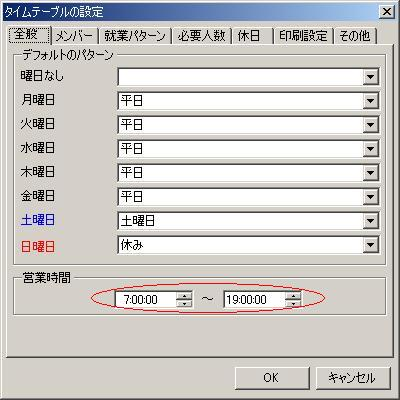
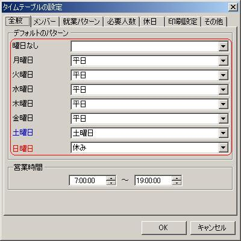

- タイムテーブルの新規作成
このプログラムをはじめて利用する場合やタイムテーブルを新規に作成する場合についての説明です。
- タイムテーブルの設定
タイムテーブルを作成するために必要なメンバーや勤務シフトなどに関する情報を登録します。
- 一般
- 営業時間の設定

営業時間を設定します。ここで設定した営業時間はメイン画面−詳細タブ上
の表示の時間の開始・終了になります。
- 勤務シフトの追加
勤務シフトを必要なだけ作成します。
- メンバーの追加
メンバーを必要なだけ作成します。
- 人員配置の追加
人員配置を必要なだけ作成します。
ここで作成した人員配置は自動設定や評価に使用します。
- 休日の追加
休日を必要なだけ作成します。
- 曜日ごとの人員配置の割り当て

ここで指定した人員配置はスケジュール作成時の初期値になります。
- スケジュールの編集
- 自動設定
自動設定機能を使用して表示している期間のタイムテーブルを設定します。
- 手動設定
自動設定を使用しないか、自動設定では設定が不十分な場合に手動で設定します。
カレンダー部分で編集で
きます。
メイン画面−詳細タブを使用す
ると複数の日付にまたがってまとめて編集することができます。
- 分析タブの利用
分析タブでは完全ではありま
せんがタイムテーブルに無理や不足がないかある程度確認することができます。
- 印刷
タイムテーブルを印刷します。
- 印刷設定
タイムテーブルの設定−印刷設定タブで
印刷レイアウトの調整をすることができます。
- タイムテーブル
の保存（および終了）
作成したタイムテーブルは保存して継続して利用することができます。